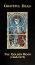
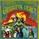
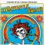
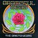
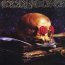
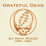
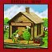

- GOLDEN ROAD (October 16, 2001)

See Rhino Records' press release.
12-CD boxed set featuring the first 9 Warner Brothers releases, plus added material. More detail to come.
- GRATEFUL DEAD (March 17, 1967)

Warner: WS1689
Produced by Dave Hassinger
San Francisco's Grateful Dead:
- Bob Weir
- Pigpen
- Bill the Drummer
- Jerry ("Captain Trips") Garcia
- Phil Lesh
Cover design: Mouse Studios; Collage: Kelly; Cover photo: Herb
Greene; Liner photo: Gene Anthony
Tracks:
- "The Golden Road (To Unlimited
Devotion)": McGanahan
Skjellyfetti
- "Beat It On Down the Line": Jesse Fuller
- "Good Mornin' Little Schoolgirl": H.C. Demarais
- "Cold Rain and Snow": McGanahan Skjellyfetti
- "Sittin' on Top of the World":
Jacobs-Carter
- "Cream Puff War": Garcia
- "Morning Dew": Dobson-Rose
- "New, New Minglewood Blues": McGanahan Skjellyfetti
- "Viola Lee Blues": Noah Lewis
- GRATEFUL DEAD (SKULL & ROSES)
(October, 1971)

Warner Bros: 2WS1935
The Band
- Jerry Garcia--Lead guitar and vocals
- Bob Weir--Rhythm guitar and vocals
- Phil Lesh--Electric bass guitar and vocals
- Bill Kreutzmann--Drums
- Ron McKernan (Pig Pen)--Organ, harmonica and vocals
- Merl Saunders--Organ on "Bertha," "Playing in the Band," and
"Wharf Rat"
Live recording for Alembic by Bob and Betty
Art work: Kelly; Photo: Bob Seideman
Tracks:
- "Bertha": m: Garcia; w: Hunter
- "Mama Tried": Merle
Haggard
- "Big Railroad Blues": Noah Lewis
- "Playing in the Band": m: Weir; w:
Hunter
- "The Other One": m: Kreutzmann &
Weir; w: Weir
- "Me & My Uncle": John Phillips
- "Big Boss Man": Smith-Dixon
- "Me &
Bobby
McGee": Kris Kristofferson & Fred Foster
- "Johnny B. Goode": Chuck
Berry
- "Wharf Rat": m: Garcia; w: Hunter
- "Not Fade Away": Norman Petty & C. Hardin
- "Goin' Down the Road Feeling
Bad": trad.; arr. Grateful Dead
- GRATEFUL DEAD 1977 - 1995
(September 17, 1996)

Arista: Selection #: 07822 - 18934 - 2/4
- DISC 1:
- Estimated Prophet
- Passenger
- Samson & Delilah
- Terrapin Station
- Good Lovin
- Shakedown Street
- Fire On The Mountain
- I Need A Miracle
- Alabama Getaway
- Far From Me
- Saint Of Circumstance
- Dire Wolf (live)
- Cassidy (live)
- Feel Like A Stranger (live)
- Franklin's Tower (live)
- DISC 2:
- Touch Of Grey
- Hell In A Bucket
- West LA Fade Away
- Throwing Stones
- Black Muddy River
- Foolish Heart
- Built To Last
- Just A little Light
- Picasso Moon
- Standing On The Moon
- Eyes Of The World (live)
- GRAY FOLDED

Distribution: Swell/Artifact: (S/A 1969-1996)
Music [various versions of "Dark Star"]
performed by the Grateful Dead;
Produced by John Oswald
Note on cover art: "The rose-eyed skull collage is designed and
compiled by John Oswald, realized
by Greg Van Alstyne, and is based on a 18th century vanitas painted
by Thys Claesz..."
Essay by Rob Bowman
Tracks: (All compositions by "Skjellyfetti/Oswald" except where
noted)
- disc 1: Transitive Axis
- "Novature (Formless Nights Fall)"
- "Pouring Velvet"
- "In Revolving Ash Light"
- "Clouds Cast"
- "Through"
- "Fault Forces"
- "The Phil Zone": Lesh/Oswald
- "La Estrella Oscura"
- "Recedes (While We Can)"
- disc 2: Mirror Ashes
- "Transilience"
- "73rd Star Bridge Sonata"
- "Cease Tone Bean"
- "The Speed of Space"
- "Dark Matter Problem\Every Leaf Is Turning"
- "Foldback Time"
- HISTORY OF THE GRATEFUL DEAD, VOLUME 1
(BEAR'S CHOICE) (July 13, 1973)
Warner Bros: BS2721
"Recorded by Bear and produced by Owsley Stanley"
"Recorded 'live' at Bill Graham's Fillmore East, February 13 and
14, 1970"
Tracks:
- "Katie Mae": S. L. Hopkins
- "Dark Hollow": Bill Browning
- "I've Been All Around This World": trad.; arr. Grateful Dead
- "Wake Up Little Susie": B. Byant & Felice Bryant
- "Black Peter": m: Garcia; w: Hunter
- "Smokestack Lightnin'": Chester Burnett
- "Hard to Handle": Redding/Isbell/Jones
- HUNDRED YEAR HALL (September,
1995)
Recorded live 4-26-72; Jahrhundert Halle Frankfurt, Germany.
Produced by John Cutler and Phil Lesh
Recording by Alembic
Artwork and design by Gecko Graphics
Liner notes include an essay by Robert Hunter
Jerry Garcia, guitar, vocals
Donna Jean Godchaux, vocals
Keith Godchaux, piano
Billy Kreutzmann, drums
Phil Lesh, bass guitar, vocals
Ron McKernan, organ, harmonica, vocals
Bob Weir, guitar, vocals
Tracks:
- CD one:
- "Bertha": m: Garcia; w: Hunter
- "Me and My Uncle": John Phillips
- "Next Time You See Me": William Harvey, Earl Forest
- "China Cat Sunflower": m: Garcia; w:
Hunter
- "I Know You Rider": Traditional arranged by Grateful Dead
- "Jack Straw": m: Weir; w: Hunter
- "Big Railroad Blues": Noah Lewis
- "Playing in the Band": m: Weir, Hart;
w: Hunter
- "Turn On Your Lovelight": D. Malone, J. Scott
- "Going Down the Road Feelin' Bad": Traditional arr. Grateful
Dead
- "One More Saturday Night": Weir
- CD two:
- "Truckin'": m: Garcia, Lesh, Weir;
w: Hunter
- "Cryptical Envelopment": Garcia
(note: this is an error--the piece
is not "Cryptical Envelopment" by Garcia, but "The Faster We Go,
the Rounder We Get" by Weir.)
- "Comes A Time": m: Garcia; w: Hunter
- "Sugar Magnolia": m: Weir; w: Hunter
- IN THE DARK (July 6, 1987)
Arista: AL8452
Produced by Jerry Garcia and John Cutler
Grateful Dead:
- Jerry Garcia
- Mickey Hart
- Bill Kreutzmann
- Phil Lesh
- Brent Mydland
- Bob Weir
Art direction and photography: Herbie Greene
Tracks:
- "Touch of Grey": m: Garcia; w: Hunter
- "Hell in a Bucket": Weir, Barlow,
Mydland
- "When Push Comes to Shove": m: Garcia;
w: Hunter
- "West L.A. Fadeaway": m: Garcia; w:
Hunter
- "My Brother Esau": m: Weir; w: Barlow
[on cassette only; also released on
B side of "Touch of Grey" single]
- "Tons of Steel": Mydland
- "Throwing Stones": m: Weir; w:
Barlow
- "Black Muddy River": m: Garcia; w:
Hunter
- INFRARED ROSES (1991)
Grateful Dead Records: GDCD40142
Produced by Bob Bralove
Additional musicians:
- Willie Green III
- Bruce Hornsby
- Branford Marsalis
Cover art: Jerry Garcia
Titles of the music: Robert Hunter
Tracks:
- I.
- "Crowd Sculpture": Bralove
- "Parallelogram": Hart, Kreutzmann
- "Little Nemo in Nightland": Garcia,
Lesh, Weir, Bralove
- II.
- "Riverside Rhapsody": Garcia, Hart, Kreutzmann, Lesh,
Mydland, Weir
- "Post-Modern Highrise Table Top Stomp": Garcia, Green III,
Hart, Kreutzmann, Lesh, Mydland, Weir
- "Infrared Roses": Garcia, Lesh, Mydland, Weir, Barlow
- III.
- "Silver Apples of the Moon": Hornsby,
Welnick
- "Speaking in Swords": Hart, Kreutzmann, Bralove
- "Magnesium Night Light": Garcia, Lesh, Mydland, Weir
- IV.
- "Sparrow Hawk Row": Garcia, Hart, Healy, Kreutzmann, Lesh,
Mydland, Weir, Bralove
- "River of Nine Sorrows": Hart, Kreutzmann, Bralove
- "Apollo at the Ritz": Garcia, Hart, Kreutzmann, Lesh,
Marsalis, Mydland, Weir
- LIVE DEAD (November 10, 1969)
Warner Bros: 2WS1830
The Band:
- Jerry Garcia--guitar & vocals
- Phil Lesh--bass guitar & vocals
- Bob Weir--guitar & vocals
- Mickey Hart--percussion
- Bill Kreutzmann--percussion
- Tom Constanten (T.C.)--keyboards
- Pigpen--vocals, congas, organ on "Death Don't Have No Mercy"
"Produced by the Grateful Dead and Bob & Betty"
Cover art: R.D. Thomas; liner photos: Herb Greene,
Jim
Marshall,
Florence Nathan
Tracks:
- "Dark Star": m: Grateful Dead; w:
Hunter
- "Saint Stephen": m: Garcia & Lesh;
w: Hunter
- "The Eleven": m: Lesh; w: Hunter
- "Turn On Your Love Light": w & m: Scott-Malone
- "Death Don't Have No Mercy": w & m: Gary David
- "Feedback": Grateful Dead
- "We Bid You Goodnight": trad.
- ONE FROM THE VAULT (1991)
Grateful Dead Records: GDCD40132
"The Grateful Dead cordially invite you to a rare and important
musical performance at The Great American Music
Hall, 859
O'Farrell Street, Date: August 13, 1975, Time 9:00 p.m."
Produced by Dan Healy
- Jerry Garcia--Guitars and vocals
- Bob Weir--Guitars and vocals
- Keith Godchaux--Keyboards and vocals
- Bill Kreutzmann--Drums and percussion
- Phil Lesh--Bass and vocals
- Donna Godchaux--Vocals
- Mickey Hart--Percussion and crickets
- Robert Hunter--Lyrics
Tracks:
- RECKONING (April 1, 1981)
- LP: Arista: A2L8604
- CD: Arista: A2CD-8523 (Lacks ""Oh Babe It Ain't No Lie")
- Also released on CD as "For the Faithful": Arista:
Arista/Pair ARPDL2-1053
Produced by Dan Healy, Betty Cantor-Jackson and Jerry Garcia
"Recorded live at the Warfield Theater, San Francisco, September
25-October 14, 1980, and at Radio City Music Hall, New York,
October 22-31, 1980"
- Jerry Garcia
- Mickey Hart
- Billy Kreutzmann
- Phil Lesh
- Brent Mydland
- Bob Weir
Cover illustration by Rick Griffin; back cover photograph by John
Werner.
Tracks:
- "Dire Wolf": m: Garcia; w: Hunter
- "The Race Is On": Don Rollins
- "Oh Babe It Ain't No Lie": Elizabeth Cotten
- "It Must Have Been the Roses": Hunter
- "Dark Hollow": Bill Browning
- "China Doll": m: Garcia; w: Hunter
- "Been All Around This World": trad.
- "Monkey and the Engineer": Jesse Fuller
- "Jack-A-Roe": trad.
- "Deep Elem Blues": trad.
- "Cassidy": m: Weir; w: Barlow
- "To Lay Me Down": m: Garcia; w: Hunter
- "Rosalie McFall": Charlie Monroe
- "On the Road Again": trad.
- "Bird Song": m: Garcia; w: Hunter
- "Ripple": m: Garcia; w: Hunter
- SHAKEDOWN STREET (November 15,
1978)
Arista: AB4198
Produced by Lowell George
The Grateful Dead:
- Jerry Garcia
- Donna Godchaux
- Keith Godchaux
- Mickey Hart
- Robert Hunter
- Billy Kreutzmann
- Phil Lesh
- Bob Weir
Additional musicians:
- Jordan Amarantha--Percussion
- Matthew Kelly--Harp [i.e. Harmonica]
Artwork by: Gilbert Shelton
Tracks:
- "Good Lovin'": A. Resnick, R. Clark
- "France": m: Hart & Weir; w: Hunter
- "Shakedown Street": m: Garcia; w:
Hunter
- "Serengetti": Hart & Kreutzmann
- "Fire on the Mountain": m: Hart; w:
Hunter
- "I Need a Miracle": m: Weir; w: Barlow
- "From the Heart of Me": Donna Godchaux
- "Stagger Lee": m: Garcia; w: Hunter
- "All New Minglewood Blues": trad.; arr. Weir
- "If I Had the World To Give": m:
Garcia; w: Hunter
- SKELETONS FROM THE CLOSET (Best
of...)
Tracks:
- "Golden Road (To Unlimited
Devotion)"
- "Truckin'"
- "Rosemary"
- "Sugar Magnolia"
- "St. Stephen"
- "Uncle John's Band"
- "Casey Jones"
- "Mexicali Blues"
- "Turn On Your Love Light"
- "One More Saturday Night"
- "Friend of the Devil"
- SO MANY ROADS: 1965-1995
(November 9, 1999)

Grateful Dead Records: GDCD 4066; Manufactured by Arista Records
Grateful Dead Merchandising site, somplete with samples,
audio, video, essays, etc.
- Compilation produced by: David Gans, Blair Jackson and Steve
Silberman
- Project Coordinator: David Gross
- Editorial direction: Steve Silberman
- Art direction and package design: Geoff Gans of Culver City
Issued with a 59 page booklet of notes:
Table of contents:
- "Red and White, Blue Suede Shoes" by Eric Pooley
- "Notes From an Outsider" by Mikal Gilmore
- "Let the Words Be Yours" by Richard Gehr
- "The Children of Dean Benedetti" by Gary Lambert
- "Everybody's Playing in the Heart of Gold Band" by David Gans
- "A Place of Our Own" by Steve Silberman
- Selection notes
- Grateful Dead
- Music Selections
- Credits
- Disc One:
- "Can't Come Down": Grateful Dead
- "Caution (Do Not Stop On Tracks)":
Grateful Dead
- "You Don't Have To Ask": Grateful Dead
- "On The Road Again": Traditional, arr. Grateful Dead
- "Cream Puff War": Garcia
- "I Know You Rider": Traditional, arr. Grateful Dead
- "The Same Thing": Willie Dixon
- "Dark Star": m: Garcia, Lesh,
McKernan, Weir; w: Hunter / "China Cat
Sunflower": m: Garcia; w: Hunter / "The
Eleven": m: Lesh; w: Hunter
- "Clementine": m: Lesh; w: Hunter
- "Mason's Children"m: Garcia, Lesh,
Weir; w: Hunter
- "To Lay Me Down": m: Garcia; w: Hunter
- Disc Two:
- "That's It For The Other One"
- "Cryptical Envelopment": Garcia
- "The Faster We go, The Rounder We Get": Weir, Kreutzmann
- "Cryptical Envelopment": Garcia
- "Beautiful Jam": Grateful Dead
- "Chinatown Shuffle": McKernan
- "Sing Me Back Home": Merle Haggard
- "Watkins Glen Soundcheck Jam": Grateful Dead
- "Dark Star Jam": Grateful Dead / "Spanish Jam": Grateful Dead /
"U.S. Blues": m: Garcia; w: Hunter
- Disc Three:
- "Eyes Of The World": m: Garcia; w:
Hunter
- "The Wheel": m: Garcia; w: Hunter
- "Stella Blue": m: Garcia; w: Hunter
- "Estimated Prophet": m: Weir; w:
Barlow
- "The Music Never Stopped": m: Weir; w:
Barlow
- "Shakedown Street": m: Garcia; w:
Hunter
- Disc Four:
- "Cassidy": m: Weir; w: Barlow
- "Hey Pocky Way": Modeliste, Neville, Nocentelli, Porter
- "Believe It or Not": m: Garcia; w:
Hunter
- "Playing In The Band": m: Weir, Hart;
w: Hunter
- "Gentlemen, Start Your Engines": m: Mydland; w: Barlow
- "Death Don't Have No Mercy": Rev. Gary Davis
- "Scarlet Begonias": m: Garcia; w:
Hunter
/ "Fire On The Mountain": m: Hart; w:
Hunter
- "Bird Song": m: Garcia; w: Hunter
- "Jam Out Of Terrapin": Grateful Dead
- Disc Five:
- "Terrapin Station": m: Garcia; w:
Hunter
- Jam Out Of "Foolish Heart": m: Garcia;
w: Hunter
- "Way To Go Home": m: Welnick, Bralove; w: Hunter
- "Liberty": m: Garcia; w: Hunter
- "Lazy River Road": m: Garcia; w: Hunter
- "Eternity": Weir, Wasserman, Dixon
- "Jam Into Days Between": Grateful Dead
- "Days Between": m: Garcia; w: Hunter
- "Whiskey In The Jar": Traditional, arr. Grateful Dead
- "So Many Roads": m: Garcia; w: Hunter
- STEAL YOUR FACE (June 26, 1976)
- LP: United Artists: GD LA620 J2 GD104
- CD: Grateful Dead Records: GDCD4006
Tracks:
- "Promised Land": Chuck Berry
- "Cold Rain and Snow": trad.; arr. Grateful Dead
- "Around and Around": Chuck Berry
- "Stella Blue": m: Garcia; w: Hunter
- "Mississippi Half-Step Uptown
Toodleloo":
m: Garcia; w: Hunter
- "Ship of Fools": m: Garcia; w: Hunter
- "Beat It On Down the Line": Jesse Fuller
- "Big River": Johnny Cash
- "Black-Throated Wind": m: Weir; w:
Barlow
- "U.S. Blues": m: Garcia; w: Hunter
- "El Paso": Marty Robbins
- "Sugaree": m: Garcia; w: Hunter
- "It Must Have Been the Roses": Hunter
- "Casey Jones": m: Garcia; w: Hunter
- TERRAPIN STATION (July 27,
1977)

- LP: Arista: AL7001
- CD: Arista: ARCD8065
Produced by Keith Olsen
- Bob Weir
- Phil Lesh
- Jerry Garcia
- Donna Godchaux
- Keith Godchaux
- Bill Kreutzmann
- Mickey Hart
Cover art:
Kelley/Mouse Studio
Tracks:
- "Estimated Prophet": m: Weir; w:
Barlow
- "Dancin' in the Streets": Stevenson-Gaye-Hunter
- "Passenger": m: Lesh; w: Peter Monk
- "Samson & Delilah": trad.; arr. Weir
- "Sunrise": w & m: Donna Godchaux
- "Terrapin Part One"
- "Lady With a Fan": m: Garcia; w: Hunter
- "Terrapin Station": m: Garcia; w: Hunter
- "Terrapin": m: Garcia; w: Hunter
- "Terrapin Transit": Hart & Kreutzmann
- "At a Siding": m: Hart; w: Hunter
- "Terrapin Flyer": Hart & Kreutzmann
- "Refrain": Garcia
- Terrapin Station [Live album]:
October, 1997
"Capital Centre, Landover, MD 3/15/90"
Grateful Dead Merchandising's entry
Grateful Dead Records: GDCD 4055
Live stereo recording by John Cutler; Mastered by Joe Gastwirt.
Illustration: Kelley & Mouse.
Limited edition: fundraiser for the "Terrapin
Station." Each CD set numbered serially.
Grateful Dead:
- Jerry Garcia
- Mickey Hart
- Bill Kreutzmann
- Phil Lesh
- Brent Mydland
- Bob Weir
Disc One:
- "Jack Straw": Weir/Hunter
- "Sugaree": Garcia/Hunter
- "Easy to Love You": Mydland/Barlow
- "Walkin Blues": Robert Johnson, arr. Weir
- "Althea": Garcia/Hunter
- "Just Like Tom Thumb's Blues": Bob Dylan
- "Tennessee Jed": Garcia/Hunter
- "Cassidy": Weir/Barlow
- "Don't Ease Me In": trad., arr. GD
Disc Two
- "China Cat Sunflower": Garcia/Hunter
- "I Know You Rider": Trad., arr. GD
- "Samson & Delilah": Trad., arr. Weir
- "Terrapin Station": Garcia/Hunter
- "Mock Turtle Jam": Grateful Dead
- "Drums": Kreutzmann/Hart
Disc Three
- "And": Kreutzmann/Hart/Bralove
- "Space": Garcia/Lesh/Weir/Mydland
- "I Will Take You Home": Mydland/Barlow
- "Wharf Rat": Garcia/Hunter
- "Throwing Stones": Weir/Barlow
- "Not Fade Away": Petty/Hardin
- "Revolution": Lennon/McCartney
- TWO FROM THE VAULT (1992)
Grateful Dead: GDCD40162
"Recorded 1968 Shrine Auditorium, L.A., CA"
Produced by Dan Healy
- Jerry Garcia--Lead guitar, vocals
- Phil Lesh--Bass, vocals
- Ron "Pigpen" McKernan--Keyboard, vocals, harmonica
- Bob Weir--Guitar, vocals
- Bill Kreutzmann--Percussion
- Mickey Hart--Percussion
Cover art: Timothy Harris; venue photographs: Brian Gold; band
photographs: Rosie McGee
Tracks:
- "Good Morning, Little Schoolgirl": Sonny Boy Williamson
- "Dark Star": m: Garcia, Lesh,
McKernan, Weir, Hart & Kreutzmann; w: Hunter
- "Saint Stephen": m: Garcia & Lesh;
w: Hunter
- "The Eleven": m: Lesh; w: Hunter
- "Death Don't Have No Mercy": Gary Davis
- "The Other One": m: Weir &
Kreutzmann; w: Weir
- "New Potato Caboose": m: Lesh; w:
Petersen
- "Turn On Your Lovelight": Scott, Malone
- "(Walk Me Out In the) Morning Dew": Dobson, Rose
- WAKE OF THE FLOOD (November 15,
1973)
- LP: Grateful Dead Records: GD 01
- CD: Grateful Dead Records: GDCD4002
Additional musicians
- Bill Atwood--Trumpet
- Vassar Clements--Violin
- Joe Ellis--Trumpet
- Martin Fierro--Alto & Tenor Saxophone
- Sarah Fulcher--Vocals
- Matthew Kelly--Harmonica
- Frank Morin--Tenor Saxophone
- Pat O'Hara--Trombone
- Doug Sahm--12 string guitar
- Benny Velarde--Timbales
Cover art: Rick Griffin
Tracks:
- "Mississippi Half-Step Uptown
Toodleloo": m: Garcia; w: Hunter
- "Let Me Sing Your Blues Away": m: K. Godchaux; w: Hunter
- "Row Jimmy": m: Garcia; w: Hunter
- "Stella Blue": m: Garcia; w: Hunter
- "Here Comes Sunshine": m: Garcia; w:
Hunter
- "Eyes of the World": m: Garcia; w:
Hunter
- "Weather Report Suite"
- WHAT A LONG STRANGE TRIP IT'S
BEEN (1977)
Warner Bros: 2W3091
Tracks:
- "New, New Minglewood Blues"
- "Cosmic Charlie"
- "Truckin'"
- "Black Peter"
- "Born Cross-Eyed"
- "Ripple"
- "Doin' That Rag"
- "Dark Star"
- "High Time"
- "New Speedway Boogie"
- "St. Stephen"
- "Jack Straw"
- "Me & My Uncle"
- "Tennessee Jed"
- "Cumberland Blues"
- "Playing In the Band"
- "Brown-Eyed Woman"
- "Ramble On Rose"
- WITHOUT A NET (1990)
- Arista: AL19-8634
- Deluxe CD: Arista: ACD2-8634-DL
Produced by John Cutler and Phil Lesh
Grateful Dead:
- Jerry Garcia
- Mickey Hart
- Bill Kreutzmann
- Phil Lesh
- Brent Mydland
- Bob Weir
Branford Marsalis--
tenor and soprano saxophone on "Eyes of the
World"
Cover illustration: Rick Griffin; photography: Ken Friedman,
Susana Millman, John Werner
Tracks:
- WORKINGMAN'S DEAD (May, 1970)
Warner Bros: WB 1869
"Special thanks to David Nelson--acoustic guitar on "Cumberland
Blues"
Cover photo, art and
design: Mouse Studios w/ Toon N Tree
Tracks:
- "Uncle John's Band": m: Garcia; w:
Hunter
- "High Time": m: Garcia; w: Hunter
- "Dire Wolf": m: Garcia; w: Hunter
- "New Speedway Boogie": m: Garcia; w:
Hunter
- "Cumberland Blues": m: Garcia & Lesh;
w: Hunter
- "Black Peter": m: Garcia; w: Hunter
- "Easy Wind": m & w: Hunter
- "Casey Jones": m: Garcia; w: Hunter